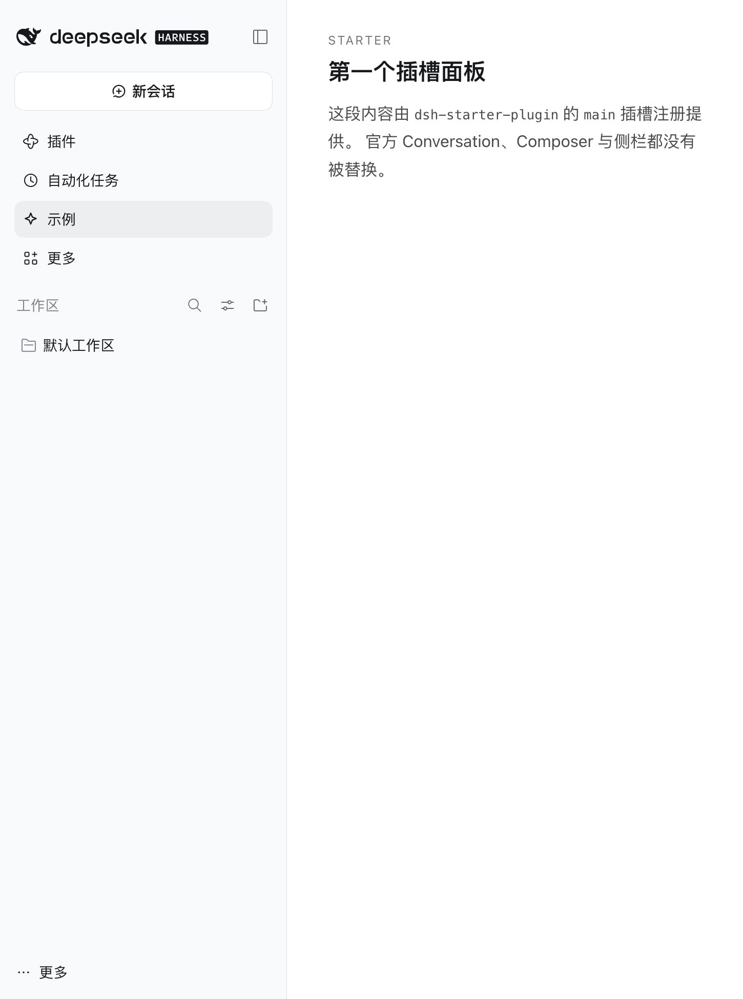
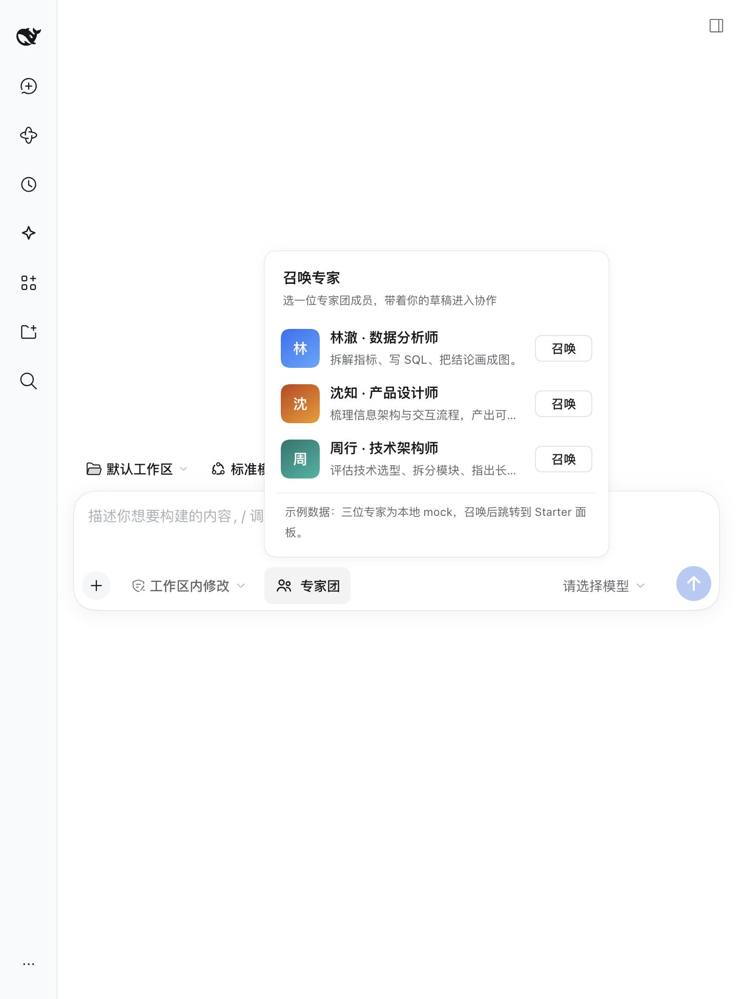

不改官方一行代码，
把自定义界面挂进 DSH
官方包提供「树」和「洞」，我们只提供「节点」。这份文档讲清三件事：为什么要走插槽、官方到底留了哪些洞（104 个）、以及用两个最小插件把开发与调试跑通。
1为什么必须通过插槽做自定义前端
先说结论：DSH 的前端不是一个可以随便改模板的页面，而是由一组官方客户端插件装配出来的运行时。界面结构、样式变量、会话数据、可访问性都由官方插件持有；第三方唯一被授权的介入方式，是往它预留的「插槽」里注册组件。
三条路径对比
| 做法 | 能改什么 | 代价 | 结论 |
|---|---|---|---|
| Fork 官方源码 | 任何东西 | 每次升级重放全部差异；官方客户端是打包产物，改动不可评审；失去官方修复 | 不采用 |
| 运行时改 DOM / 注入全局 CSS | 视觉上看起来能改 | 官方一改类名就崩；拿不到会话数据；破坏无障碍与键盘导航；React 会擦掉你的节点 | 不采用 |
| 注册进官方插槽 | 官方明确预留的位置与数据 | 受插槽契约约束（这恰恰是优点） | 唯一推荐 |
插槽给的四个保证
插槽名与 props 都在官方类型里
每个插槽在 SlotMap 中声明了 kind、scope 和 owner props。注册时类型不符直接编译失败，不靠文档猜。
会话上下文自动下发
session 作用域会把 sessionId、useSession、useInput、inputActions 合成进组件 props，不需要自己连 store。
卸载即回收
ctx.slots.inject() 绑在插件 fiber 上：插件卸载、声明塌陷、热重载，注册会连同子插槽一起被清理。
一个组件崩了，页面还在
条目渲染出错会被捕获并「退役」，回落到同格的下一个候选；同优先级抢位则在注册期直接抛错。
一次启动里，插槽是怎么长出来的
上面的「保证」听起来抽象。把它落到 WorkDSH 桌面的一次真实启动上：一个插件从磁盘上的包，变成屏幕上一块 UI，要穿过 四个执行环境、九个交接点。这一节按真实代码走一遍——任何一跳断了，表现都不一样，这张图同时也是第三部分调试手册的地图。
| 参与方 | 它是谁 | 它负责什么 | 它能改什么 |
|---|---|---|---|
| Electron 主进程 外壳 |
apps/desktop/src/workdsh-main.ts |
建窗口、起 Host 子进程、抓就绪 URL、装载页面。没有任何 DSH 业务代码。 | 窗口、菜单、更新、插件安装入口 |
| Host 进程 官方 Node |
dsh/lib/profile-boot.js 的 runProfile() |
按 Profile 依赖 + 分层 patch 装配插件树，提供 HTTP/WS 服务，决定前端拿到什么。 | 服务、路由、工具、Agent、前端模块清单 |
| 浏览器进程 Web 前端 |
官方客户端插件（dsh-client-ui-*） |
把 Host 给出的模块清单装配成 React 应用，持有布局、会话、样式变量。 | 只通过插槽注册改 |
| 你的插件包 两个面 |
packages/plugins/<name> |
Host 面提供服务；浏览器面往插槽里放组件。 | 被授权的那一格 |
图 1 停在「HTML 到手」。真正让插件出现在界面上的是接下来这段纯浏览器内的管线——它和 Host 完全解耦，Host 只是把清单写好，浏览器照着装。
按代码说一遍（WorkDSH 桌面的真实入口）
- 外壳不等任何人：
app.whenReady()之后先建一个隐藏的BrowserWindow，把「正在启动个人工作区」的占位 HTML 塞进去，所以用户看到的不是白屏。 - 起 Host 子进程：
spawn(内置 node, [.workdsh-host.mjs, '--no-open'])，环境里带DSH_HOME、DSH_AGENTS_HOME和 patch 层目录；stdout 用 pipe 接回来。 - Host 装配插件树：启动器里只有一句
runProfile({ profile, patchFiles, … })——Profile 的dependencies加上叠加的cordis.patch.yml，决定这一棵树上有哪些插件。 - 插件激活：每个插件
apply(ctx)拿到的ctx是同一个 cordis 上下文；服务、路由、工具、以及前端注册表都在这时挂上。 - 组前端清单：
ClientModuleRegistry（自己inject: ['loader']）扫描 loader entries，挑出声明了dsh.client的包，算出模块顺序，产出window.__DSH_BOOT__，并把script/global行注入 index HTML。 - 就绪才打印 URL：
loader.await()等整棵树稳定，再做一次启动审计，最后才console.log('dsh web: ' + authenticatedUrl)。也就是说URL 出现时，插件树已经是完整的。 - 外壳抓 URL 开窗：
READY_PATTERN从 stdout 里抠出带 token 的地址，page.loadURL(url)，成功后销毁占位窗口并显示。 - token 换成 cookie：第一次带
?token=的 index 请求会换发 cookie 并 302 到干净的./，页面里的静态资源与/plugins/…都靠这个 cookie 认证。 - 浏览器装配：
__ModuleLoader__先建惰性 CJS 表，每个/plugins/<id>/client.js只登记工厂不执行；cordis Loader 按inject顺序实例化 fiber，调用每个模块的apply(ctx)。 - 注册 → 渲染：
ctx.slots.register()把组件写进对应插槽的条目表；官方 owner 组件渲染到那一格时按order/priority取条目，React 挂上去——这就是你在界面上看到的那块 UI。
dsh plugin add -w 装进去）；② 有一行 loader entry 且包声明了 dsh.client；③ 该模块的 apply 没有抛错、注册的插槽名真实存在。三者缺一，界面都完全正常——只是没有你的东西，这正是最容易误判的地方。
| 卡在哪一步 | 你会看到 | 先查什么 |
|---|---|---|
| ② 起进程 | 窗口停在「正在启动个人工作区」，90 秒后弹超时 | Host 进程能不能独立跑起来；端口是否被占 |
| ③ 装配插件树 | URL 打得开，但插件整片不存在 | cordis.yml / patch 层、包是否真的装进 Profile |
| ④ 激活 | 只在 Host 日志里出现一个 FAILED fiber | 插件 apply 的首个异常；启动审计报告 |
| ⑤ 组清单 | Host 正常，页面也正常，就是没模块 | loader entry 是否有 dsh.client、bundle 路径是否存在 |
| ⑨ 浏览器装配 | Console 报 loaded without registering / 白屏 | 打包外壳是否 load({ id, factory })；模块 id 是否与清单一致 |
| ⑩ 注册 | 模块加载了，但界面没变化 | 插槽名拼写、id 与 main 的 key 是否一致 |
这套分层看着绕，收益很直接：外壳不含业务（换版本只换 Host）；Host 不含像素（同一份前端也能给 dsh web 用）；插件不带外壳（一个包同时提供 Host 面与浏览器面）。所以「不改官方一行代码」不是口号，而是这条链路上每一跳各自守边界的结果。
那「自定义样式」到底怎么写
前端定制的 90% 需求其实是三件事：加一块 UI、换掉某个占位、统一视觉。它们在插槽体系里各有正确做法。
① 加一块 UI：组件 + 局部样式
组件内部写 <style> 并使用官方设计变量，不写全局选择器：
const css = `
.dsh-expert-team__trigger{height:36px;border-radius:10px;color:var(--dsw-alias-label-secondary)}
.dsh-expert-team__trigger:hover{background:var(--dsw-alias-interactive-bg-hover)}
.dsh-expert-team__popover{background:var(--dsw-alias-bg-layer-1);box-shadow:var(--dsw-elevation-panel)}
`官方暴露的变量族（--dsw-alias-bg-layer-1/2、--dsw-alias-label-primary/secondary、--dsw-alias-border-l2、--dsw-elevation-panel、--dsw-font-family）会跟随主题与暗色模式自动变化——用变量，不要写死颜色。
② 换掉某个占位：用 priority 显式遮蔽
// 只在自己的容器里遮蔽，且写明遮蔽谁、何时撤
ctx.slots.register({ name: 'conversation.input.left', id: 'some-picker', priority: -20 }, () => null)不要用「条件渲染 return null」去压别人的注册——那是别人的条目，没有生命周期可言。
③ 统一视觉：只改变量，不改结构
品牌、字号、圆角这类全局观感，通过官方已有的样式变量覆盖（在自有插件里挂一段 :root 变量覆盖即可），不要去改官方组件内部的类名或 DOM。
2官方前端插槽全图（104 个）
下面这份清单不是手写的：它由脚本扫描已安装的 @deepseek-ai/dsh-client-* 包里所有 interface SlotMap 声明生成，含 kind / scope / owner props；“位置与用途”一列为官方注释的中文说明。
| 来源包 | 插槽数 | 负责的界面 |
|---|---|---|
dsh-client-ui-conversation | 29 | 会话外壳、头部、输入区、消息流容器 |
dsh-client-ui-chat | 9 | 消息气泡、推理块、命令视图、额度提示 |
dsh-client-ui-sidebar | 8 | 左栏品牌、面板列表、工作区、设置入口 |
dsh-client-ui-plugin-manager | 9 | 插件市场与插件详情 |
dsh-client-ui-settings | 9 | 设置弹层、分区、通用项 |
dsh-client-ui-workspace | 7 | 工作区选择、会话行、Toast |
dsh-client-ui-sidebar-right | 7 | 右栏、页签、页签菜单 |
dsh-client-ui-layout | 6 | 三栏框架、外壳边、浮层、main |
dsh-client-ui-sidebar-documentpreview | 5 | 文档预览页签与操作 |
dsh-client-ui-settings-models | 3 | 模型供应商卡片 |
dsh-client-ui-deliverables / ui-tool | 4 | 交付物操作、工具调用视图 |
| 其余 8 个包（approval / model-selection / user-questions / trajectory / renderer / subagent / sidebar-files / cordis） | 8 | 审批卡、模型名、提问、轨迹、根节点、子代理、文件树、Cordis 工具视图 |
位置图
六张图按「外壳 → 侧栏 → 主区 → 输入区 → 右栏 → 设置/插件」依次展开，图上的名字就是可直接注册的插槽名。
root 在最外层，三栏由 sidebar / main / rightbar 占位，四个边角座位挂在 shell.*。conversation.chat.* 系列插槽承载。input.left 就是「输入框左侧控件」的位置（expert-team 用的就是它）。分组清单
① 全局外壳（6）
窗口级容器：在正常页面结构之外，决定最外层边框与常驻浮层。
| 插槽 | 契约 | 位置与用途 |
|---|---|---|
rootrenderer | single root RootOwnerProps | 官方渲染树的根节点，由 ui-layout 的 AppFrame 占用；「不要」在这里注册——single 插槽会整页遮蔽官方框架。 |
shell.leadinglayout | single root — | 框架左上角的窗口铬座位，仅在侧栏完全隐藏时挂载（macOS 折叠态）。 |
shell.bottomlayout | single root — | 三栏之下的整宽底部内容；渲染高度会压缩三栏可用高度，空内容不占位。 |
shell.overlaylayout | list root — | 全框架浮动层，在所有列之上且默认可点击穿透；徽标、Toast、状态胶囊放这里，新增即并列。 |
shell.quota-noticechat | chain root QuotaNoticeOwnerProps | 全框架额度提示链：第一条命中的选择器接管，全部拒绝时显示通用警告 Toast。 |
workspace.toastworkspace | keyed root WorkspaceToastOwnerProps | 按业务判别键选中的工作区通知。 |
② 三栏框架（4）
左栏、中栏、右栏三个纵向轨道；`main` 是键控插槽，决定中央显示哪一页。
| 插槽 | 契约 | 位置与用途 |
|---|---|---|
sidebarlayout | single root SidebarOwnerProps | 整个左栏，由 ui-sidebar 占用；登录/面板内部座位才是扩展点——在这里注册会整体替换导航栏。 |
mainlayout | keyed root — | 按侧栏条目 id 选中的中央面板；保留 key conversation 承载会话，其他 key 不绑定会话。 |
main.conversationconversation | single session-maybe — | 位于 root 级 main 面板条目之下的会话外壳。 |
rightbarlayout | single root RightbarOwnerProps | 右列：中栏为它让出的轨道，或什么都不占；由右侧栏占用，是否显示由占用者自己记录。 |
③ 左侧栏（14）
品牌、面板列表、工作区与会话浏览、设置入口、底部动作。
| 插槽 | 契约 | 位置与用途 |
|---|---|---|
sidebar.brand.marksidebar | single root SidebarBrandMarkOwnerProps | 品牌图标，展开行与折叠轨都会用到。 |
sidebar.brand.namesidebar | single root SidebarBrandNameOwnerProps | 展开态下的品牌名称，壳自带文字兜底。 |
sidebar.toggle.badgesidebar | single root Record<never, never> | 折叠态展开按钮里的非交互通知点。 |
sidebar.panellistsidebar | list root SidebarPanelIconOwnerProps | 全局面板图标列表；每个 id 对应一个 main 面板，按钮与无障碍由侧栏负责。 |
sidebar.panellist.actionssidebar | list root SidebarPanelActionsOwnerProps | 面板列表「更多」菜单的行；有注册才显示「更多」。 |
sidebar.workspacessidebar | single root SidebarSectionOwnerProps | 工作区/会话浏览区：分区头、搜索、分组会话列表与所有工作区弹窗。 |
sidebar.workspaces.directoryFlowworkspace | single root DirectoryFlowOwnerProps | 侧栏浏览区下方的目录流占位。 |
sidebar.session.row.leadingworkspace | list root SessionRowScheduleOwnerProps | 会话行标题前 16px 的首饰位；有状态点（待交互/新消息/进行中）时该位被状态点占用。 |
sidebar.session.row.hoverworkspace | list root SessionRowScheduleOwnerProps | 会话行悬浮卡中、相对时间与状态行之间的区域。 |
sidebar.workspaces.session.row.actionworkspace | list root SessionRowOwnerProps | 会话行末尾的悬浮按钮；官方 archive=100、pin=200。 |
sidebar.workspaces.session.menu.itemworkspace | list root SessionRowOwnerProps | 会话「…」菜单的行；官方 pin/rename/fork/archive/session-id 已占用 100–450。 |
sidebar.chat.conversationsubagent | single session — | 侧栏聊天页签里承载的一次会话。 |
sidebar.settingssidebar | single root SidebarSettingsOwnerProps | 侧栏底部的设置座位；ui-settings 在此注册触发行 + 弹层，侧栏只传列状态。 |
sidebar.footer.actionsidebar | list root SidebarFooterActionOwnerProps | 侧栏底部、设置旁边的可选动作。 |
④ 空态（Hero）（5）
还没有会话时中央区的品牌、工作区选择与快捷选项。
| 插槽 | 契约 | 位置与用途 |
|---|---|---|
conversation.hero.brand.markconversation | single root HeroBrandMarkOwnerProps | 空会话标题上方的品牌标识。 |
conversation.hero.workspaceconversation | single root EmptyWorkspaceOwnerProps | 空态 Hero 展示的工作区选择器。 |
conversation.hero.workspace.directoryFlowworkspace | single root DirectoryFlowOwnerProps | 空态工作区选择器下方的目录流占位。 |
conversation.hero.agentPresetconversation | single session-maybe HeroAgentPresetOwnerProps | 新会话预置的 Agent 预设控件。 |
conversation.hero.optionsconversation | list session — | 新会话行内右对齐的紧凑选项（仅在有会话时渲染）。 |
⑤ 会话头部与视图（11）
会话标题行、操作按钮、视图切换，以及承载消息流的最外层容器。
| 插槽 | 契约 | 位置与用途 |
|---|---|---|
conversation.headerconversation | single session-maybe — | 常驻导航容器，没有选中会话时也在。 |
conversation.header.leadingconversation | single root ConversationHeaderLeadingOwnerProps | 会话标题之前的全局导航位，无会话时同样可用。 |
conversation.sessionconversation | single session inline | 严格绑定单个会话的会话主体。 |
conversation.session.headerconversation | single session inline | 严格绑定单个会话的标题、操作与视图导航。 |
conversation.session.header.actionsconversation | list session ConversationHeaderActionOwnerProps | 标题旁按升序排列的会话操作。 |
conversation.session.header.utilitiesconversation | list session ConversationHeaderActionOwnerProps | 右对齐、按升序排列的会话工具按钮。 |
conversation.session.header.cornerconversation | single session ConversationHeaderCornerOwnerProps | 头部最右侧角落的一个控件（占进头部内边距）；占位者无内容时该角不占位。 |
conversation.session.header.lineageconversation | single session ConversationHeaderLineageOwnerProps | 某个会话面包屑标题的可选替换。 |
conversation.session.header.views.actionsconversation | list root ConversationViewActionsOwnerProps | 视图页签行「更多」菜单的行；有注册才显示「更多」。 |
conversation.viewconversation | list session ConvViewOwnerProps | 已注册的会话目标视图，同一时刻只渲染一个。 |
conversation.contentconversation | single session-maybe — | 可复用的会话内容组件，由展示型宿主实例化。 |
⑥ 消息流（12）
每一条用户消息、助手回复、工具调用与审批卡的位置，全部是独立插槽。
| 插槽 | 契约 | 位置与用途 |
|---|---|---|
conversation.chat.flowchat | single session ChatFlowOwnerProps | 有序的聊天行与本地回显，带可视区可见性钩子。 |
conversation.chat.nodechat | keyed session ChatNodeOwnerProps | 按 ChatNodeKind 分派的消息节点渲染器；重复 key 覆盖，未占用的 kind 不渲染该行。 |
conversation.chat.turnTailchat | list session TurnTailOwnerProps | 一轮对话结束、操作行之前的有序特性区；无内容时返回 null。 |
conversation.chat.assistant-actionschat | list session AssistantActionOwnerProps | 一条已完成的助手消息下方的有序操作；按消息 id 去重，同 id 会覆盖原条目。 |
conversation.chat.commandviewchat | keyed session CommandRowOwnerProps | 按命令名分派的命令行渲染器；没有占用的 key 使用通用卡片。 |
conversation.chat.reasoning.bodychat | single session ReasoningBodyOwnerProps | 展开的推理正文（原始文本 + 可展示文本）；官方条目 priority 100，更小的值可替换它。 |
conversation.chat.message.imageschat | single session MessageImagesOwnerProps | 一组连续消息图片的渲染器；注册即替换官方图集，不注册则不显示图片。 |
conversation.chat.user.imageschat | single session MessageImagesOwnerProps | 用户消息图片（含待发送与本地回显），与助手输出图片分开替换。 |
conversation.user.text.nodeconversation | keyed session UserTextNodeOwnerProps | 纯 JSON 文本节点的、由业务方自定义的内联渲染器。 |
conversation.trajectory.imagestrajectory | single session MessageImagesOwnerProps | 轨迹账本中一组记录图片的渲染器；注册即替换官方图集。 |
conversation.approval.detailapproval | single session ApprovalDetailOwnerProps | 审批请求所关联的那次工具调用的可选详情区。 |
conversation.plan-review.actionsuser-questions | list session inline | 正在评审的那份计划对应的操作；批准动作仍由提问输入框负责。 |
⑦ 工具结果与交付物（5）
工具调用卡片的渲染面，以及产出文件/文档的操作区。
| 插槽 | 契约 | 位置与用途 |
|---|---|---|
tool.call.toolviewtool | keyed session ToolCallOwnerProps | 按工具名分派的工具调用视图；重复 key 覆盖，未占用的 name 使用通用行。 |
tool.call.imagestool | single session ToolImagesOwnerProps | 已结束的图片类工具调用的图片集，经由附件呈现插件渲染。 |
tool.view.cordiscordis | keyed session CordisToolViewOwnerProps | 位于最新 cordis_run 卡片内、由包自有的可交互区域。 |
deliverables.file.actionsdeliverables | list session inline | 通过会话事件坐标打开某个文件的操作。 |
deliverables.review.file.actionsdeliverables | list session 同上 | 变更文件评审页签内的同一组文件操作。 |
⑧ 输入区（Composer）（13）
输入卡片四周的所有座位：上沿条带、卡内浮层、工具行左右、模型/权限选择。
| 插槽 | 契约 | 位置与用途 |
|---|---|---|
conversation.composerconversation | chain session ComposerChainProps | 当前会话常驻输入框的选择器路由替换（chain，第一个不拒绝的条目接管）。 |
conversation.composer.barconversation | single session-maybe ComposerBarOwnerProps | 常驻输入框主体，包含无会话时的惰性状态。 |
conversation.composer.dockconversation | list session — | 输入卡片下方的环境条目。 |
conversation.input.dockconversation | list session InputZone | 输入卡片上方的整宽条目。 |
conversation.input.overlayconversation | list session — | 渲染在输入卡片内部的浮动条目。 |
conversation.input.leftconversation | list session — | 输入工具行左侧的紧凑控件（expert-team 用的就是这里）。 |
conversation.input.rightconversation | list session — | 发送按钮之前的紧凑控件。 |
conversation.input.activityconversation | single session InputActivityOwnerProps | 模型选择器之后的紧凑动作；可横向展开，同时保留编辑器与发送按钮。 |
conversation.input.attachmentsconversation | single session-maybe ComposerAttachmentsOwnerProps | 可选的草稿附件栏与拖放目标。 |
conversation.input.modelconversation | single session InputControlOwnerProps | 工具行内的模型选择器；空间不足时通过两个 CSS 变量切换为紧凑显示。 |
conversation.input.model.labelmodel-selection | single session ModelLabelOwner | 不可交互的模型名内联标签；不贡献时输入框显示目录名称。 |
conversation.input.permissionconversation | single session InputControlOwnerProps | 工具行内的当前会话权限控件。 |
conversation.input.planconversation | single session InputControlOwnerProps | 工具行内的计划（Plan）控件。 |
⑨ 右侧栏（13）
页签条、页签内容、文档预览、文件树与页签菜单。
| 插槽 | 契约 | 位置与用途 |
|---|---|---|
rightbar.sessionsidebar-right | single session RightbarOwnerProps & { readonly active: boolean | 由 root 级右侧栏控制器选中的会话内容。 |
sidebar.right.pane.tabsidebar-right | keyed session — | 右栏某个页签的主体，按该页签类型 id 分派；类型不存在时显示「无法查看」提示。 |
sidebar.right.pane.tab.titlesidebar-right | keyed session — | 页签标题（chip 与浮动面板头部），key 与主体一致。 |
sidebar.right.tab.guidesidebar-right | chain session — | 引导页签主体（chain）：第一个不拒绝的条目整体替换官方引导。 |
sidebar.right.tab.guide.actionssidebar-right | list root SidebarRightGuideActionsOwnerProps | 引导「更多」菜单的行。 |
sidebar.right.tab.guide.entrysidebar-right | keyed session SidebarRightGuideEntryOwnerProps | 某个 provider 的引导卡片，官方卡片作为兜底。 |
sidebar.right.tab.menu.itemsidebar-right | list session SidebarRightTabMenuOwnerProps | 某个页签操作菜单末尾的额外条目，按注册顺序排列。 |
sidebar.right.tab.documentsidebar-documentpreview | keyed session DocumentBodyOwner | 由已注册实现 id 选中的文档正文。 |
sidebar.right.tab.document.actionsidebar-documentpreview | keyed session inline | 文档工具栏「重新加载」之前的、渲染器专属控件。 |
sidebar.right.tab.document.actionssidebar-documentpreview | list session inline | 作用于被预览文件的工具栏贡献，渲染在预览自带控件之后。 |
sidebar.right.tab.document.office.pdfsidebar-documentpreview | keyed session DocumentBodyOwner | Office 转换字节对应的 PDF 呈现。 |
sidebar.right.tab.document.unpreviewablesidebar-documentpreview | list session inline | 无法预览的文件在「重试」位置提供的空态内容。 |
sidebar.right.tab.files.actionssidebar-files | list session inline | 文件树「重新加载」之后的工作区目录操作。 |
⑩ 设置（12）
设置入口、弹层头尾、通用项、插件页签、模型供应商卡片。
| 插槽 | 契约 | 位置与用途 |
|---|---|---|
settings.launchersettings | single root SettingsLauncherOwnerProps | 可选的侧栏账号启动器，用于打开壳自有的设置面板。 |
settings.triggersettings | single root SettingsTriggerOwnerProps | 侧栏底部设置触发行的内容（图标 + 文案）；按钮外框与展开态由壳负责。 |
settings.headersettings | single root SettingsHeaderOwnerProps | 面板标题文本位；不贡献时标题为空。 |
settings.actionsettings | list root SettingsHeaderOwnerProps | 设置内容区头部、关闭按钮之前的可选操作。 |
settings.closesettings | single root SettingsHeaderOwnerProps | 关闭按钮的读屏标签文本（按钮本身的图标、几何与焦点由壳负责）。 |
settings.sectionsettings | list root SettingsSectionOwnerProps | 一个设置页 = 一条 list 条目；id/order/label 决定导航身份与位置。 |
settings.general.itemsettings | list root SettingsGeneralItemOwnerProps | 「通用」分区里的一行偏好设置；文案、当前值与写路径都由注册者负责。 |
settings.onboardingsettings | list root SettingsOnboardingOwnerProps | 由设置特性贡献的引导步骤，壳一次只挂载一个。 |
settings.plugins.tabsettings | list root SettingsPluginsTabOwnerProps | 「插件」设置分区内的一个页面，按页签呈现。 |
settings.models.footersettings-models | list root ModelsFooterOwnerProps | 供应商行与新增控件之后的扩展区。 |
settings.models.provider-cardsettings-models | keyed root ProviderCardExtrasOwnerProps | 每张供应商卡片（含首启态与新增草稿）的适配扩展区。 |
settings.models.sign-insettings-models | single root inline | 凭据编辑器之前的可选登录方式。 |
⑪ 插件市场 / 插件管理（9）
插件列表、详情、配置与安装动作。
| 插槽 | 契约 | 位置与用途 |
|---|---|---|
plugins.tabplugin-manager | list root PluginTabProps | 页面自带「已安装」之后的新页签，例如「发现」。 |
plugins.itemplugin-manager | list root PluginConfigViewProps | 插件页「官方」分组里的一张卡片，同时也是该插件自己的页面主体；官方设置页已占用此位。 |
plugins.add.actionsplugin-manager | list root PluginAddActionsProps | 安装之后追加的菜单按钮行（72px 高，标题 + 最多两行描述）。 |
plugins.bundle.activationplugin-manager | keyed root PluginActivationOwnerProps | 用户从列表启用某个 bundle 之后的引导内容（按 npm 包名 keyed）。 |
plugins.bundle.configplugin-manager | keyed root PluginConfigViewProps | 某个 bundle 自身的配置区，渲染在它页面的描述与行之间。 |
plugins.detail.actionsplugin-manager | list root PluginDetailProps | 详情页头部的控件，排在页面自带的开关与卸载之前。 |
plugins.detail.badgeplugin-manager | list root PluginDetailProps | 详情页标题旁的标签，排在版本、beta、问题标签之后。 |
plugins.detail.sectionplugin-manager | list root PluginDetailProps | 详情页正文下方的分区：bundle 页取在行之后，其他页取在配置之后。 |
plugins.row.configplugin-manager | keyed root PluginConfigViewProps | bundle 声明的某一行的配置页，key 为 <包名>#<行 id>。 |
选型速查
| 我想做的事 | 用哪个插槽 | 要点 |
|---|---|---|
| 侧栏加一个入口 | sidebar.panellist + main | id 必须等于 main 的 key |
| 输入框左侧加按钮 | conversation.input.left | list，按 order 排序（expert-team 用它） |
| 输入框上沿加整宽条带 | conversation.input.dock | owner 是 InputZone，可读草稿 |
| 输入框内加浮层 | conversation.input.overlay | 自己管理开关与外部点击 |
| 会话头部加操作 | conversation.session.header.actions | list，注意官方占用 -10..20 的 order |
| 右栏加一个页签 | sidebar.right.pane.tab | 配合 ctx.sidebarRightTabs.register 声明页签 |
| 设置里加一页 | settings.section | list，root 作用域 |
| 插件市场加一个入口 | plugins.item | list，可用负 order 置顶 |
| 全局浮层 / 提示 | shell.overlay | list，root；带定位上下文 |
3实战：从零到两个可运行的插件
下面所有代码都来自本项目的真实文件，可直接抄。两个示例的 client.tsx 全文附在各自小节末尾（含注释，未删减），可以先读注册部分再看细节。
工程结构
.
├── package.json // pnpm 脚本：build / build:one / typecheck / dev / smoke / clean
├── pnpm-workspace.yaml // packages: [packages/plugins/*]
├── .npmrc // registry（本机走镜像）
├── packages/plugins/
│ ├── starter/ // 侧栏图标 + 主面板
│ ├── expert-team/ // 输入框左侧「专家团」+ 浮层 + 跳转
│ └── host-only/ // 仅 Host，无 UI
├── scripts/
│ ├── build-plugin.mjs // 扫描目录，按面构建 + __ModuleLoader__ 外壳 + 类型声明
│ ├── dev.mjs // 构建 → 打包 → 注册进 Profile → 启动 dsh web
│ ├── smoke.mjs // 无头验收
│ ├── typecheck.mjs
│ └── clean.mjs
└── .dsh-home/ // 运行期 Home 与 Profile（生成物）示例一：starter —— 侧栏图标 + 主面板
- 建包
packages/plugins/starter/package.json同时声明两个面：Host 用exports["."]，浏览器用exports["./client"]。
{
"name": "dsh-starter-plugin",
"type": "module",
"exports": {
".": { "types": "./dist/index.d.ts", "default": "./dist/index.js" },
"./client": { "types": "./dist/client.d.ts", "default": "./dist/client.browser.js" }
},
"files": ["dist", "cordis.patch.yml"],
"dsh": {
"bundle": { "patch": "./cordis.patch.yml" },
"client": { "platform": "web", "inject": [] }
}
}- 让包进入插件树：
cordis.patch.yml一行 insert，官方插件管理器会在 Profile 里插一条 loader entry。
- insert:
- id: dsh-starter-plugin
name: dsh-starter-plugin- Host 面：提供服务并声明生命周期（本例只提供一个简单服务）。
import type { Context } from '@deepseek-ai/cordis'
export const name = 'dsh-starter-plugin'
export const inject = [] as const
declare module '@deepseek-ai/cordis' {
interface Context { starter: { greeting(who?: string): string } }
}
export function apply(ctx: Context): void {
ctx.provide('starter', { greeting: (who = 'world') => `Hello, ${who}!` })
ctx.effect(() => {
ctx.logger('dsh-starter-plugin').info('ready')
return () => {}
}, 'dsh-starter-plugin.lifecycle')
}- 浏览器面：两个注册，一个图标一个面板。id 与 key 用同一个常量。
export const inject = ['slots'] as const
const PANEL_ID = 'starter-hello'
export function apply(ctx: Context): void {
ctx.slots.inject('sidebar.panellist', () =>
ctx.slots.register(
{ name: 'sidebar.panellist', id: PANEL_ID, label: '示例', order: 15 },
({ size }) => <StarterIcon size={size} />)) // owner props: { size, active }
ctx.slots.inject('main', () =>
ctx.slots.register({ name: 'main', key: PANEL_ID }, StarterPanel))
}- 类型从哪来：插槽名由官方包做 declaration merging，必须 type-only import，否则
SlotMap里只有root。
'root'import type {} from '@deepseek-ai/dsh-client-ui-sidebar/client' // sidebar.panellist
import type {} from '@deepseek-ai/dsh-client-ui-layout/client' // main
// 报错：Argument of type '"sidebar.panellist"' is not assignable to parameter of type '"root"'/** * Browser entry: assembled by the official client module loader. * * Only public slot APIs are used here. The shell owns layout, the sidebar * button, accessibility and selection state; this file contributes a glyph and * one panel body. */import * as React from 'react'import type { Context } from '@deepseek-ai/cordis'import type {} from '@deepseek-ai/dsh-client-ui-renderer/client'import type {} from '@deepseek-ai/dsh-client-ui-slots'// Type-only: merges `sidebar.panellist` into SlotMap.import type {} from '@deepseek-ai/dsh-client-ui-sidebar/client'// Type-only: merges `main` into SlotMap.import type {} from '@deepseek-ai/dsh-client-ui-layout/client'export const name = 'dsh-starter-client'export const inject = ['slots'] as const/** Sidebar list id === main keyed slot key, so the row actually opens this panel. */const PANEL_ID = 'starter-hello'function StarterIcon({ size }: { size: number }) { return ( <svg width={size} height={size} viewBox="0 0 24 24" fill="none" stroke="currentColor" strokeWidth={1.8} strokeLinejoin="round" aria-hidden="true" > <path d="M12 3l2.3 5.7L20 11l-5.7 2.3L12 19l-2.3-5.7L4 11l5.7-2.3z" /> </svg> )}function StarterPanel() { return ( <section style={{ padding: '32px 40px', maxWidth: 720, color: 'var(--dsw-alias-label-primary)' }}> <p style={{ margin: '0 0 8px', fontSize: 12, letterSpacing: '.12em', textTransform: 'uppercase', opacity: 0.6, }} > Starter </p> <h1 style={{ margin: '0 0 12px', fontSize: 22, fontWeight: 650 }}>第一个插槽面板</h1> <p style={{ margin: 0, lineHeight: 1.7, opacity: 0.78 }}> 这段内容由 <code>dsh-starter-plugin</code> 的 <code>main</code> 插槽注册提供。 官方 Conversation、Composer 与侧栏都没有被替换。 </p> </section> )}export function apply(ctx: Context): void { // List slot: id is dedupe key + order position + accessibility label. ctx.slots.inject('sidebar.panellist', () => ctx.slots.register( { name: 'sidebar.panellist', id: PANEL_ID, label: '示例', order: 15 }, StarterIcon, ), ) // Keyed slot: the key must equal the sidebar row id above. ctx.slots.inject('main', () => ctx.slots.register({ name: 'main', key: PANEL_ID }, StarterPanel), )}阅读顺序：先看 8–15 行的 type-only import（决定 SlotMap 里有哪些名字），再看 63–76 行的两个 ctx.slots.inject —— PANEL_ID 同时是 sidebar.panellist 的 id 与 main 的 key，这是「点图标能打开面板」的唯一原因。样式全部走内联与 --dsw-alias-* 变量。

main 插槽渲染插件自己的面板——其余界面保持官方原样。示例二：expert-team —— 输入框浮层 + 跨面板跳转
- 选插槽：输入框左下角 →
conversation.input.left（list · session）。 - 写触发按钮 + 浮层：自己管理开关、外部点击与
Escape；浮层绝对定位在按钮上方。 - 注入跳转能力：用
inject面把ctx.layout包成summon()，并在跳转前检查目标面板是否存在。
/**
* Host face of a UI-only plugin.
*
* The UI lives entirely in `client.tsx`. This entry exists because the official
* client-modules service discovers browser bundles by scanning *host loader
* entries* for `dsh.client` declarations — no loader row means no client module,
* even if the package ships one.
*/
import type { Context } from '@deepseek-ai/cordis'
export const name = 'dsh-expert-team-plugin'
export const inject = [] as const
export function apply(ctx: Context): void {
ctx.effect(() => {
ctx.logger('dsh-expert-team-plugin').debug('expert team UI mounted from dsh-expert-team-plugin/client')
return () => {}
}, 'dsh-expert-team-plugin.lifecycle')
}这个文件里没有一行 UI，但必须有：dsh-client-modules 是扫 Host 的 loader entry 找 dsh.client 字段的。所以「纯前端插件」也一定是「Host 面 + 浏览器面」两个入口，缺一个就只剩包在磁盘上、模块不进 boot 清单。
const SLOT_ID = 'dsh-expert-team'
const STARTER_PANEL = 'starter-hello' // === starter 的 main key
ctx.slots.inject('conversation.input.left', () =>
ctx.slots.register(
{
name: 'conversation.input.left',
id: SLOT_ID,
order: 40,
inject: () => ({
summon: (expert: Expert): boolean => {
// 目标插件可能没启用：先确认 main 里有这个 key
const available = ctx.slots.entriesOfSlot('main')
.some(entry => entry.options.key === STARTER_PANEL)
if (!available) return false
ctx.layout.selectPanel(STARTER_PANEL as MainPanelId)
window.dispatchEvent(new CustomEvent('dsh-starter:expert-summoned', { detail: expert }))
return true
},
}),
},
ExpertTeamTrigger,
))自己管理，不依赖壳
插槽只给你「控件的位置」。开关状态、外部点击、键盘关闭、aria-expanded 都是组件自己的责任；面板用固定定位并按触发器位置夹在视口内，窄窗口也不会被切掉。
用 layout 服务，不要伪造导航
ctx.layout.selectPanel(key) 是唯一正当的换页方式；它同时更新侧栏高亮与 main 的键控渲染。
/** * Expert team picker, contributed to the left side of the composer tool row. * * Everything is mocked in the browser: no Host round-trip, no Session mutation. * The only real integration is the slot contract — `conversation.input.left` * for the trigger and the `main` keyed slot for the jump target. */import * as React from 'react'import type { Context } from '@deepseek-ai/cordis'import type { MainPanelId } from '@deepseek-ai/dsh-client-ui-layout/client'import type {} from '@deepseek-ai/dsh-client-ui-renderer/client'import type {} from '@deepseek-ai/dsh-client-ui-slots'// Type-only: merges `conversation.input.left` into SlotMap.import type {} from '@deepseek-ai/dsh-client-ui-conversation/client'export const name = 'dsh-expert-team-client'export const inject = ['slots', 'layout'] as const/** List id of this trigger inside `conversation.input.left`. */const SLOT_ID = 'dsh-expert-team'/** Target panel contributed by packages/plugins/starter (sidebar id === main key). */const STARTER_PANEL = 'starter-hello'interface Expert { readonly id: string readonly name: string readonly role: string readonly summary: string readonly avatar: string readonly accent: string}const experts: readonly Expert[] = [ { id: 'analyst', name: '林澈', role: '数据分析师', summary: '拆解指标、写 SQL、把结论画成图。', avatar: '林', accent: 'linear-gradient(145deg,#2f6df6,#5aa9ff)', }, { id: 'designer', name: '沈知', role: '产品设计师', summary: '梳理信息架构与交互流程，产出可评审方案。', avatar: '沈', accent: 'linear-gradient(145deg,#c2410c,#f59e0b)', }, { id: 'architect', name: '周行', role: '技术架构师', summary: '评估技术选型、拆分模块、指出长期成本。', avatar: '周', accent: 'linear-gradient(145deg,#0f766e,#14b8a6)', },]const css = `.dsh-expert-team{position:relative;display:flex;align-items:center}.dsh-expert-team__trigger{display:flex;align-items:center;gap:7px;height:36px;padding:0 10px;border:0;border-radius:10px;background:transparent;color:var(--dsw-alias-label-secondary);font:500 13px/1 var(--dsw-font-family,sans-serif);cursor:pointer}.dsh-expert-team__trigger:hover,.dsh-expert-team__trigger[aria-expanded="true"]{background:var(--dsw-alias-interactive-bg-hover);color:var(--dsw-alias-label-primary)}.dsh-expert-team__trigger svg{width:18px;height:18px;flex:none;fill:none;stroke:currentColor;stroke-width:1.7;stroke-linecap:round;stroke-linejoin:round}.dsh-expert-team__popover{position:fixed;z-index:90;box-sizing:border-box;width:336px;max-width:calc(100vw - 24px);padding:10px;border-radius:15px;background:var(--dsw-alias-bg-layer-1);color:var(--dsw-alias-label-primary);box-shadow:var(--dsw-elevation-panel);font:14px/20px var(--dsw-font-family,sans-serif)}.dsh-expert-team__popover *{box-sizing:border-box}.dsh-expert-team__head{padding:6px 8px 10px}.dsh-expert-team__head strong{display:block;font-size:14px;font-weight:600}.dsh-expert-team__head small{display:block;margin-top:2px;font-size:11px;color:var(--dsw-alias-label-secondary)}.dsh-expert-team__row{display:grid;grid-template-columns:38px minmax(0,1fr) auto;align-items:center;gap:10px;padding:6px;border-radius:10px}.dsh-expert-team__row:hover{background:var(--dsw-alias-interactive-bg-hover)}.dsh-expert-team__avatar{display:grid;place-items:center;width:38px;height:38px;border-radius:11px;color:#fff;font-weight:600}.dsh-expert-team__copy{min-width:0}.dsh-expert-team__copy strong,.dsh-expert-team__copy small{display:block;overflow:hidden;text-overflow:ellipsis;white-space:nowrap}.dsh-expert-team__copy strong{font-size:13.5px;font-weight:600}.dsh-expert-team__copy small{margin-top:2px;font-size:11.5px;color:var(--dsw-alias-label-secondary)}.dsh-expert-team__summon{min-width:56px;padding:6px 10px;border:1px solid var(--dsw-alias-border-l2);border-radius:8px;background:var(--dsw-alias-bg-layer-2);color:var(--dsw-alias-label-primary);font:500 12px/1 var(--dsw-font-family,sans-serif);cursor:pointer}.dsh-expert-team__summon:hover{border-color:var(--dsw-alias-label-primary)}.dsh-expert-team__foot{margin:6px 2px 0;padding:8px 8px 4px;border-top:.5px solid var(--dsw-alias-border-l2);font-size:11px;color:var(--dsw-alias-label-secondary)}.dsh-expert-team__error{margin:6px 8px 0;font-size:11.5px;color:var(--dsw-alias-state-danger-primary,var(--dsw-alias-label-primary))}@media (max-width:720px){.dsh-expert-team__trigger span{display:none}}`type TriggerProps = { summon: (expert: Expert) => boolean }function ExpertTeamTrigger({ summon }: TriggerProps) { const root = React.useRef<HTMLDivElement>(null) const [open, setOpen] = React.useState(false) const [position, setPosition] = React.useState<{ left: number, bottom: number }>() const [error, setError] = React.useState('') // The composer sits in the middle of the window, and a 336px panel anchored // left would run past the right edge on narrow windows (or under the sidebar // when flipped). Measure the trigger and clamp a fixed-position panel inside // the viewport instead; re-place on resize, which also covers sidebar // collapse/expand moving the composer. React.useLayoutEffect(() => { if (!open) return const place = () => { const rect = root.current?.getBoundingClientRect() if (!rect) return const width = Math.min(356, window.innerWidth - 24) setPosition({ left: Math.max(12, Math.min(rect.left, window.innerWidth - width - 12)), bottom: window.innerHeight - rect.top + 10, }) } place() window.addEventListener('resize', place) return () => window.removeEventListener('resize', place) }, [open]) React.useEffect(() => { if (!open) return const onPointerDown = (event: PointerEvent) => { if (!root.current?.contains(event.target as Node)) setOpen(false) } const onKeyDown = (event: KeyboardEvent) => { if (event.key !== 'Escape') return setOpen(false) root.current?.querySelector<HTMLButtonElement>('.dsh-expert-team__trigger')?.focus() } document.addEventListener('pointerdown', onPointerDown) document.addEventListener('keydown', onKeyDown) return () => { document.removeEventListener('pointerdown', onPointerDown) document.removeEventListener('keydown', onKeyDown) } }, [open]) const pick = (expert: Expert) => { setError('') if (summon(expert)) { setOpen(false) return } setError('目标面板不可用：请确认 starter 插件已启用。') } return ( <div className="dsh-expert-team" ref={root}> <style>{css}</style> <button type="button" className="dsh-expert-team__trigger" aria-label="召唤专家" aria-haspopup="dialog" aria-expanded={open} onClick={() => setOpen(value => !value)} > <svg viewBox="0 0 24 24" aria-hidden="true"> <circle cx="9" cy="8" r="3.2" /> <path d="M3.5 19c.6-3 2.9-4.6 5.5-4.6s4.9 1.6 5.5 4.6" /> <circle cx="17.5" cy="9.5" r="2.4" /> <path d="M15.4 14.6c2.6-.4 4.7 1.1 5.1 4.4" /> </svg> <span>专家团</span> </button> {open ? ( <div className="dsh-expert-team__popover" style={position ? { left: position.left, bottom: position.bottom } : { visibility: 'hidden' }} role="dialog" aria-label="召唤专家" > <div className="dsh-expert-team__head"> <strong>召唤专家</strong> <small>选一位专家团成员，带着你的草稿进入协作</small> </div> {experts.map(expert => ( <div className="dsh-expert-team__row" key={expert.id}> <span className="dsh-expert-team__avatar" style={{ background: expert.accent }} aria-hidden="true"> {expert.avatar} </span> <span className="dsh-expert-team__copy"> <strong>{expert.name} · {expert.role}</strong> <small>{expert.summary}</small> </span> <button type="button" className="dsh-expert-team__summon" aria-label={`召唤 ${expert.role} ${expert.name}`} onClick={() => pick(expert)} > 召唤 </button> </div> ))} <p className="dsh-expert-team__foot">示例数据：三位专家为本地 mock，召唤后跳转到 Starter 面板。</p> {error ? <p className="dsh-expert-team__foot dsh-expert-team__error" role="alert">{error}</p> : null} </div> ) : null} </div> )}export function apply(ctx: Context): void { ctx.slots.inject('conversation.input.left', () => ctx.slots.register( { name: 'conversation.input.left', id: SLOT_ID, order: 40, inject: () => ({ summon: (expert: Expert): boolean => { // The sidebar row and the main panel share one string; verify the // target exists so a disabled starter plugin cannot strand the user // on an empty panel. const available = ctx.slots .entriesOfSlot('main') .some(entry => entry.options.key === STARTER_PANEL) if (!available) return false ctx.layout.selectPanel(STARTER_PANEL as MainPanelId) window.dispatchEvent(new CustomEvent('dsh-starter:expert-summoned', { detail: expert })) return true }, }), }, ExpertTeamTrigger, ), )}阅读顺序：60–82 行是组件全部 CSS（用官方变量，跟随主题）；86–198 行是触发器与浮层，含按触发器位置夹在视口内的定位（97–111）、外部点击与 Escape（113–129）；200–225 行才是插槽注册，inject 面把 ctx.layout 包成 summon()，并在换页前确认目标 main key 存在。

conversation.input.left），点击弹出浮层，三位 mock 专家各带「召唤」；点击后跳转到图 8 的 Starter 面板。本地开发循环
.artifacts/<sha16>/pnpm install # 首次：Corepack 固定的 pnpm 10.34.5
pnpm dev # 构建 + 注册 + 启动（幂等，第二次很快）
pnpm smoke # 无头验收：不用打开浏览器pnpm dev 会调用官方 CLI 的 --from-default-profile web，在 .dsh-home/profiles/starter 生成一份官方默认 Web 配置，再把你的插件以 file: 依赖装进去。官方包一行没改，删掉 .dsh-home 就能完全重来。
为什么改完代码必须重启
客户端模块没有 HMR：官方 client-modules 在 boot 时按清单装载模块。所以流程是「重建 → 重新打包 → 重启服务 → 刷新页面」。内容哈希保证了同名同版本也能装到新内容，这是本地迭代最容易踩的坑。
调试手册
1. 先确认模块有没有被装载
URL=$(grep -o 'http://127.0.0.1:18990/?token=[^ ]*' dev.log | tail -1)
curl -sL -c /tmp/jar "$URL" -o /tmp/page.html
grep -o 'dsh-expert-team-plugin/client.js' /tmp/page.html | head -1没有出现，说明问题在 Host 侧：包没装进 Profile、cordis.patch.yml 没写、或者 dsh.client 字段缺失。注意官方是扫描 loader entries 找 dsh.client 的——纯 UI 插件也要有 Host 入口与 patch 行。
2. 打开浏览器 DevTools 看运行期
- Console：
window.__ModuleLoader__未定义 → 打包外壳写错了（必须是load({ id, factory })）；Cannot read properties of undefined (reading 'slots')→export const inject少写了'slots'。 - Elements：找不到你的节点 → 注册没生效（插槽名拼错、注册到了未声明的插槽，会在加载期抛错）。
- Network：
plugins/??…那条组合请求里应当包含你的/client.js。
3. 运行时探查插槽
官方插槽服务提供了只读查询，可以在 Console 里确认「谁注册了什么」：
// 插件里临时加：
window.__debug = { slots: ctx.slots, layout: ctx.layout }
// Console：
__debug.slots.entriesOfSlot('conversation.input.left').map(e => e.options)
__debug.layout.panelInfo.getSnapshot()4. 常见错误对照
| 现象 | 原因 | 处理 |
|---|---|---|
编译报 not assignable to parameter of type '"root"' | 没 type-only import 官方插槽声明包 | 加 import type {} from '@deepseek-ai/dsh-client-ui-*/client' |
| 页面白屏，Console 报模块缺失 | 客户端模块没进 boot 清单 | 检查 dsh.client、patch 行、Profile 依赖 |
| 图标在，点开是空白 | sidebar.panellist.id ≠ main.key | 用同一个常量 |
加载期抛 same priority | 同 id 同优先级重复注册 | 显式给不同 priority 并注明原因 |
| 改了代码但界面没变 | 旧 tgz 被缓存/未重新注册 | 看日志有没有 registering …；必要时 pnpm clean |
| 两个 React / hooks 报错 | 客户端打包把 react 内联了 | 保持 external: ['react','react-dom','@deepseek-ai/*'] |
| 输入区控件挡住输入框 | 浮层用了固定定位或过高 z-index | 相对定位 + bottom: calc(100% + 10px) |
5. 卸载验证（最硬的一条）
把插件从 packages/plugins 移走、pnpm dev 重启后，界面必须回到与官方安装包一致的状态：没有残影、没有空面板、没有多余按钮。
验收与 Checklist
// 1) 所有声明了 dsh.client 的插件，模块都出现在官方 boot 清单里
clientModules.filter(id => !html.includes(id))
// 2) Host-only 插件确实被应用（stdout 标记）
buffer.includes('[dsh-host-only-plugin] applied')- 选插槽：先查第二部分清单，能复用就不新建；自建插槽用
yourco.这类自有前缀，并只在自己的容器里渲染。 - 建包：双面 exports +
dsh.bundle.patch+dsh.client，目录放packages/plugins/<name>/。 - 写注册：
inject: ['slots', …]；list 给id/order，keyed 给key；成对注册、返回 disposer。 - 写样式：组件内
<style>+--dsw-alias-*变量，不写全局选择器、不覆盖官方 DOM。 - 本地验证：
pnpm dev手动点一遍；pnpm smoke过自动化；DevTools 看 Console/Network。 - 卸载验证：移除插件后界面回到官方原样。